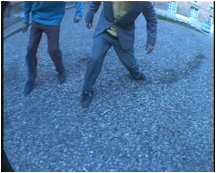

| software |
| home page |
|
com All correspondence should include complete contact information, including the full User Group name, telephone and fax numbers, e-mail address and web page URL. .href; You are viewing this version of the Jasc Software Website because you are not using the most recent version of your browser or your browser is in beta. If you are using IE and you would like to update to the most recent version, click here. If you are using a preview release of either browser, updates to this site will be posted when the prospective browser is in final release. |
|  | those are the truly interesting things that are worth pursuing. . i was at transmediale, and me and my LAN-friends actually got half the software award (the other half went to Alex MacLean) as well as two public awards (given by the visitors of transmediale) as well as an honorary mention in the interaction category for tracenoizer. matthew fuller for instance talked about how software designers design interfaces and how these then shape users. margarethe on the other hand talked more about the generative qualities of software. |